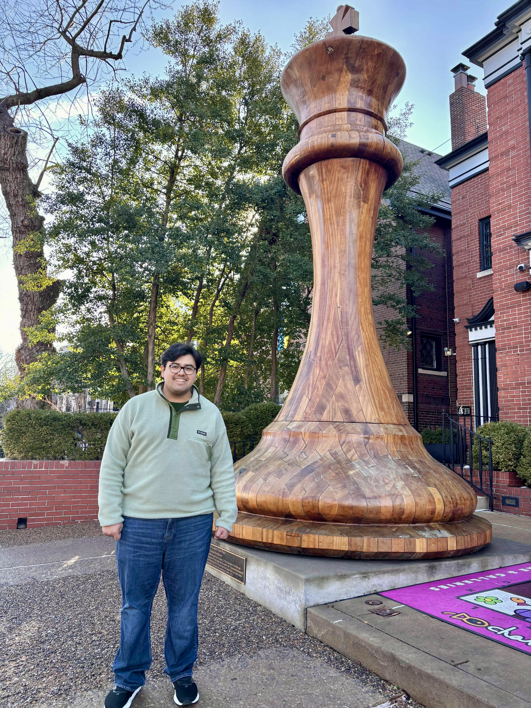

About Me

I’m a PhD student in the Premila Research Group at Saint Louis University, where I apply computational chemistry to understand biological systems. My current research focuses on building crowded molecular models that faithfully capture the complexity of the all-atom cytoplasm—aiming for simulations that better reflect real cellular environments.
I work with a range of methods, including molecular dynamics (NAMD, AMBER), enhanced sampling (RAMD, SMD), QM/MM, and force field development, to study systems such as glycolytic enzymes, crowded environments, and drug–target complexes.
Contact
- Email: edgardo.deleon@slu.edu